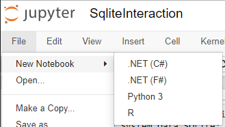
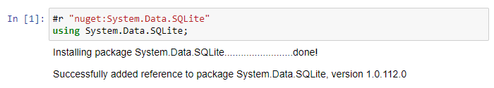
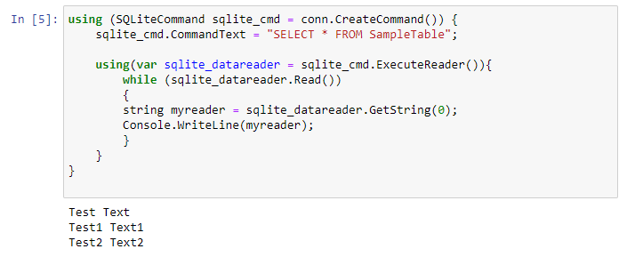

Testing SQLite in C# Jupyter notebook
Posted on Tuesday, 12 November 2019
Now that we have Jupyter Notebooks with C# installed, using it as an environment to play with SQLite is very easy. SQLite is a relational database that is small in footprint and self-contained. It also has a great in-memory mode which is perfect for playing around in a Jupyter notebook.
You can access my SQLite example notebook here. (Note, if you can tell me how to host them online to make them executable, drop me a line on twitter)
You can create a C# Notebook from the file menu of Jupyter.

We need to pull in the nuget package System.Data.SQLite to interact with the database.
#r "nuget:System.Data.SQLite"
using System.Data.SQLite;
#r is used to reference a dll or a nuget package. If you prefix the command with "nuget:" then the jupyter notebook will download the nuget and add it as a reference. Then as in usual c#, you must reference it.
When you run this cell, you should see the following output:

We can then create a connection to an in-memory SQLite database.
SQLiteConnection conn;
conn = new SQLiteConnection("Data Source=:memory:;Version=3;New=True;");
try
{
conn.Open();
}
catch (Exception ex)
{
Console.WriteLine(ex);
}
Creating two identical tables SampleTable and SampleTable1.
using (SQLiteCommand sqlite_cmd = conn.CreateCommand()) {
string Createsql = "CREATE TABLE SampleTable(Col1 VARCHAR(20), Col2 INT)";
string Createsql1 = "CREATE TABLE SampleTable1(Col1 VARCHAR(20), Col2 INT)";
sqlite_cmd.CommandText = Createsql;
sqlite_cmd.ExecuteNonQuery();
sqlite_cmd.CommandText = Createsql1;
sqlite_cmd.ExecuteNonQuery();
}
Inserting a set of data into these tables.
using (SQLiteCommand sqlite_cmd = conn.CreateCommand()) {
sqlite_cmd.CommandText = "INSERT INTO SampleTable(Col1, Col2) VALUES ('Test Text ', 1);";
sqlite_cmd.ExecuteNonQuery();
sqlite_cmd.CommandText = "INSERT INTO SampleTable(Col1, Col2) VALUES ('Test1 Text1 ', 2);";
sqlite_cmd.ExecuteNonQuery();
sqlite_cmd.CommandText = "INSERT INTO SampleTable(Col1, Col2) VALUES ('Test2 Text2 ', 3);";
sqlite_cmd.ExecuteNonQuery();
sqlite_cmd.CommandText = "INSERT INTO SampleTable1(Col1, Col2) VALUES ('Test3 Text3 ', 3);";
sqlite_cmd.ExecuteNonQuery();
}
Reading from SampleTable to verify the insertions went through correctly.
using (SQLiteCommand sqlite_cmd = conn.CreateCommand()) {
sqlite_cmd.CommandText = "SELECT * FROM SampleTable";
using(var sqlite_datareader = sqlite_cmd.ExecuteReader()){
while (sqlite_datareader.Read())
{
string myreader = sqlite_datareader.GetString(0);
Console.WriteLine(myreader);
}
}
}
If you executed the whole workbook up to now, you should have the following output.

Closing the connection to the databse.
conn.Close();
Jupyter notebook with C# and R
Posted on Tuesday, 12 November 2019
Following the release of the updated dotnet try tool, here are my instructions for getting started.
Installing jupyter notebook with a c# kernel
- Check if you installed python with visual studio.
Go to the start menu and start typing Python

Right click on python and follow the Open File Location until you find the place where python is installed.

Or type:
where pythonin the command line.If so, add python to the PATH of your environment. On my installation, the paths to Python were as follows. I had to add the Scripts path for the pip installation to be in the command line.
C:\Program Files (x86)\Microsoft Visual Studio\Shared\Python37_64\C:\Program Files (x86)\Microsoft Visual Studio\Shared\Python37_64\Scripts
install jupyter using pip which was installed with visual studio, make sure to run in an administrator shell
pip install jupyterNow get the list of installed jupyter kernels:
jupyter kernelspec list
Available kernels:
c:\program files (x86)\microsoft visual studio\shared\python37_64\share\jupyter\kernels\python3
Install the latest version of .net try
dotnet tool install dotnet-try -gfinally install the .net kernel for jupyter with the command:
dotnet try jupyter installtest the kernel is now installed with
jupyter kernelspec list

launch jupyter notebook
In the command line, type:
jupyter notebook
A browser window should open and the terminal should display:
C:\Repos\noteb>jupyter notebook
[I 22:14:55.617 NotebookApp] JupyterLab extension loaded from c:\program files (x86)\microsoft visual studio\shared\python37_64\lib\site-packages\jupyterlab
[I 22:14:55.618 NotebookApp] JupyterLab application directory is c:\program files (x86)\microsoft visual studio\shared\python37_64\share\jupyter\lab
[I 22:14:55.625 NotebookApp] Serving notebooks from local directory: C:\Repos\noteb
[I 22:14:55.626 NotebookApp] The Jupyter Notebook is running at:
[I 22:14:55.627 NotebookApp] http://localhost:8888/?token=XXXXXXXXXXXXXXXXXXXc1ee1dfccc0a6624263d584b8ca4c
[I 22:14:55.628 NotebookApp] or http://127.0.0.1:8888/?token=XXXXXXXXXXXXXXXXXXXc1ee1dfccc0a6624263d584b8ca4c
[I 22:14:55.629 NotebookApp] Use Control-C to stop this server and shut down all kernels (twice to skip confirmation). [C 22:14:55.737 NotebookApp]
To access the notebook, open this file in a browser:
file:///C:/Users/xxxxxx/AppData/Roaming/jupyter/runtime/nbserver-17608-open.html
Or copy and paste one of these URLs:
http://localhost:8888/?token=XXXXXXXXXXXXXXXXXXXc1ee1dfccc0a6624263d584b8ca4c
or http://127.0.0.1:8888/?token=XXXXXXXXXXXXXXXXXXXc1ee1dfccc0a6624263d584b8ca4c
[I 22:15:16.852 NotebookApp] Kernel started: be6910a0-92f0-4ec0-a26c-d8274b44cd6d
The main page of the Jupyter notebook allows you to see the notebooks available in the folder and to create new ones.

Hello world
Create a new C# notebook. Then type
using System;
in the first cell. I executed it and then typed:
Console.WriteLine("Hello World");
in the second cell. Executing it shows us that the C# Kernel is working.

#r is used to reference a dll or a nuget package. If you prefix the command with "nuget:" then the jupyter notebook will download the nuget and add it as a reference. Then as in usual c#, you must reference it.
Installing an R kernel for jupyter notebook
To install R Tools for Visual Studio, install the Visual Studio Extension R Tools for Visual Studio 2019, which was in preview when I looked. Once this is installed, you must install the Microsoft R client. This option will be presented if you go to the "R Interactive" window.

I have R installed with visual studio, so I launched visual studio in admin mode to be able to have my R directory writable, went to the R Tools menu at the top and selected "R Interactive".

From the command line of R, I typed in the following commands. Installation guide R

install.packages('IRkernel')
IRkernel::installspec(user = FALSE)
I got the following output after installing the IRKernel into Jupyter [InstallKernelSpec] Installed kernelspec ir in C:\ProgramData\jupyter\kernels\ir. Following this, you can check on the command line that the R kernel appears in the list of Jupyter Kernels with jupyter kernelspec list, this should show the ir kernel installed:
Available kernels:
ir C:\ProgramData\jupyter\kernels\ir
Use R to show a some math
Create a new R notebook and type in the first cell:
demo(plotmath)
Executing this should show you the following long list of tables with mathematical symbols.

Using bulk inserts on databases
Posted on Monday, 11 November 2019
When inserting large amounts of data into databases, you should consider using the bulk functions instead of running single row INSERT commands. Single row INSERT command will usually lead to poor performance. There exists two main techniques for mutiple row insertions in databases from code and several more if you use the loader tools that accompany the database. Here I'll detail the two main methods: BulkInserts and VectorInserts.
Bulk Inserts for Oracle, MSSQL, Postgresql
For the examples, it is assumed that there exists an object Timeseries ts with a field IEnumerable TimeseriesData that contains Datapoints. A Datapoint has a DateTime field named t and a Decimal field named value.
Datatable to Database
We setup a DataTable in memory and fill it with the data we need to insert.
DataTable dt = new DataTable();
dt.Columns.Add("IDTIMESERIES", typeof(int));
dt.Columns.Add("TIMEPOINT", typeof(DateTime));
dt.Columns.Add("VALUE1", typeof(decimal));
int nRowsMaxDt = 0;
//ts being a timeseries object that contains a IEnumberable TimeSeriesData of sp (single points)
foreach (var sp in ts.TimeSeriesData)
{
object[] oRowDt = new object[3];
oRowDt[0] = ts.Id; oRowDt[1] = sp.t; oRowDt[2] = (decimal)sp.value;
dt.Rows.Add(oRowDt); nRowsMaxDt = nRowsMaxDt + 1;
}
DumpDataTableToDB("DATATIMESERIES", dt, nRowsMaxDt);
The DumpDataTableToDB function is then written on a per database basis. Below you will find my examples for OracleDb, MSSQL and Postgres.
Oracle:
Oracle has two sets of drivers, the Unmanaged and the Managed drivers. Your usings will be different per package.
With ODP.NET Unmanaged (Drivers installed seperately - you will need to add the references manually)
using Oracle.DataAccess.Client;
using Oracle.DataAccess.Types;
With ODP.NET Managed (Nuget Installed https://www.nuget.org/packages/Oracle.ManagedDataAccess/ )
using Oracle.ManagedDataAccess.Client;
using Oracle.ManagedDataAccess.Types;
Use the OracleBulkCopy function with Con being an open connection to the database (OracleConnection).
public void DumpDataTableToDB(string TableName, DataTable dt, int nCount)
{
using (OracleBulkCopy obc = new OracleBulkCopy(Con))
{
obc.BatchSize = nCount;
obc.DestinationTableName = TableName;
obc.WriteToServer(dt);
obc.Close();
}
}
This method works, but I had issues with Oracle DataGuard. So for Oracle, I do recommend using the Vectorized data insert presented below with Oracle ArrayBind.
MS SQL Server
The Microsoft SQL server uses SqlBulkCopy to connect and import the data. Again here the Con represents an open connection to the database.
using System.Data;
using System.Data.Common;
using System.Data.SqlClient;
public void DumpDataTableToDB(string TableName, DataTable dt, int nCount)
{
using (SqlBulkCopy bulkCopy = new SqlBulkCopy(((SqlConnection)Con).ConnectionString, SqlBulkCopyOptions.KeepNulls))
{
foreach (System.Data.DataColumn col in dt.Columns)
{
bulkCopy.ColumnMappings.Add(col.ColumnName, col.ColumnName);
}
bulkCopy.DestinationTableName = TableName;
bulkCopy.WriteToServer(dt);
}
}
Postgresql
In Postgresql, the important part to note is the COPY ... FROM command. This allows you to provide either a file located on the DB Server or data from STDIN, passed from the client. The Format specifier allows for binary, which we are using here or text and csv. Note, the csv format is very picky, try the text format first if you are doing imports.
As usualm the Con represents an open database connection.
using Npgsql; // Nuget https://www.nuget.org/packages/Npgsql
public void DumpDataTableToDB(string TableName, DataTable dt, int nCount)
{
Dictionary<Type, NpgsqlTypes.NpgsqlDbType> TypeDict = new Dictionary<Type, NpgsqlTypes.NpgsqlDbType>();
TypeDict.Add(typeof(int), NpgsqlTypes.NpgsqlDbType.Integer);
TypeDict.Add(typeof(double), NpgsqlTypes.NpgsqlDbType.Double);
TypeDict.Add(typeof(decimal), NpgsqlTypes.NpgsqlDbType.Numeric);
TypeDict.Add(typeof(string), NpgsqlTypes.NpgsqlDbType.Varchar);
TypeDict.Add(typeof(DateTime), NpgsqlTypes.NpgsqlDbType.Timestamp);
TypeDict.Add(typeof(char[]), NpgsqlTypes.NpgsqlDbType.Varchar);
TypeDict.Add(typeof(Guid), NpgsqlTypes.NpgsqlDbType.Uuid);
string sql = "COPY " + TableName + " ( ";
foreach (System.Data.DataColumn col in dt.Columns)
{
sql += (col.ColumnName.ToLower() + ",");
}
sql = sql.TrimEnd(',') + ") FROM STDIN (FORMAT BINARY)";
int nRows = dt.Rows.Count;
using (var BulkWrite = ((Npgsql.NpgsqlConnection)Con).BeginBinaryImport(sql))
{
for (int idRow = 0; idRow < nRows; idRow++)
{
BulkWrite.StartRow();
foreach (System.Data.DataColumn col in dt.Columns)
{
if (dt.Rows[idRow].IsNull(col))
{
BulkWrite.WriteNull();
}
else
{
if (col.DataType == typeof(string) && string.IsNullOrEmpty(dt.Rows[idRow].Field<string>(col)))
{
BulkWrite.WriteNull();
}
else
{
BulkWrite.Write(dt.Rows[idRow][col.Ordinal], TypeDict[col.DataType]);
}
}
}
}
BulkWrite.Complete();
}
}
}
Alternative Method for Oracle Array Bind, for Vector Insertion
This is a better method for insertions on Oracle that does not cause issues with dataguard, using arrays of data. The single INSERT command is fed with an array of data.
int nRowsCount = ts.Count();
int[] IDTIMESERIES = new int[nRowsCount];
DateTime[] TIMEPOINT = new DateTime[nRowsCount];
decimal[] VALUE1 = new decimal[nRowsCount];
// loading the arrays with data
int i = 0;
foreach (var sp in ts.TimeSeriesData)
{
IDTIMESERIES[i] = ts.Id; TIMEPOINT[i] = sp.t; VALUE1[i] = sp.value;
i++;
}
if (nRowsCount > 0)
{
OracleCommand cmdTimeDump = new OracleCommand("Insert into DATATIMESERIES (IDTIMESERIES, TIMEPOINT, VALUE1) VALUES (:1, :2, :3)", OraCon);
cmdTimeDump.ArrayBindCount = nRowsCount;
cmdTimeDump.Parameters.Add(new OracleParameter() { OracleDbType = OracleDbType.Int32, Value = IDTIMESERIES });
cmdTimeDump.Parameters.Add(new OracleParameter() { OracleDbType = OracleDbType.Date, Value = TIMEPOINT });
cmdTimeDump.Parameters.Add(new OracleParameter() { OracleDbType = OracleDbType.Decimal, Value = VALUE1 });
cmdTimeDump.ExecuteNonQuery();
}
Links
An excellent overview of connections to databases in .net core was published on the Microsoft devblogs.
Reflections on Webassembly - May/Nov 19
Posted on Sunday, 3 November 2019
Initial post
I rewatched this talk from 2014, The Birth and Death of JavaScript, and am still amazed at how prescient it was and still is.
The blurb for this is: “This science fiction / comedy / absurdist / completely serious talk traces the history of JavaScript, and programming in general, from 1995 until 2035.”
ASM JS is still there, but what Gary Bernhardt calls Metal in the talk is WebAssembly. And WebAssembly (Wasm) is coming, and not just for the web.
In the .Net world, we see the first glimpses of the power of Wasm with the arrival of Blazor, which allows the execution of code running on the .net framework (using the mono runtime) inside a browser.
Wasm is not stopping there. With the standardising of WASI, a system interface to run Wasm outside the web, we are truly moving towards architecture independence.
It might take until 2035, like in the video, for Wasm to take over the world, but I have the feeling we will see its impact in the near future. Looking at the progress on Wasm in the two last years, I would recommend any programmer to read up on it and understanding its implications on the way they work.
For further reading on Wasm, I would recommend the mozilla WebAssembly Archives and in particular, the WebAssembly post mvp future by Lin Clark.
Update in november 2019
Over the last few months, I have seen Wasm cropping up in more and more places, for example as a way to deploy code to running inside databases, such as the case of Wasm for Postgres which allows stored procedures to run webassembly code.
Another case of that is the reflection on using WebAssembly as a glue between programming languages by allowing type information and guarantees to flow between programming languages. This would allow future systems to take the best of breed choice of programming language for each component of the system while still allowing compile time reasoning on type safety by using a type preserving compiler.
As I noted on twitter, as I read, watch and learn about webassembly, I'm getting the feeling this is going to be a titanic shift in the way we reason about programs, languages, frameworks and software design in general.
"The avalanche has already started, it is too late for the pebbles to vote" - Ambassador Kosh, Babylon 5.